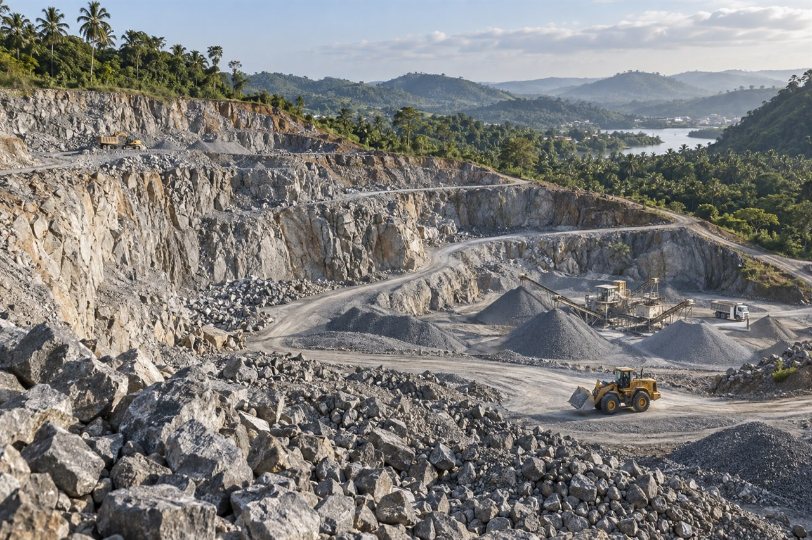
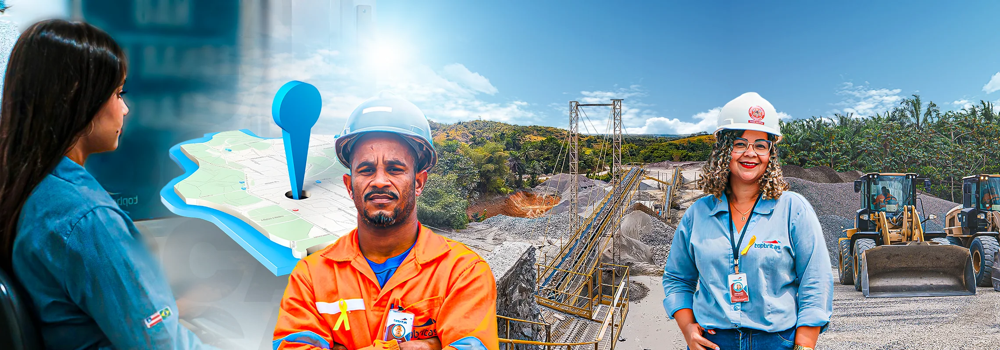
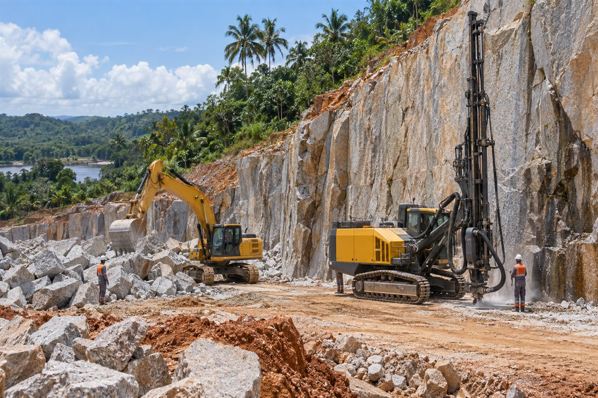
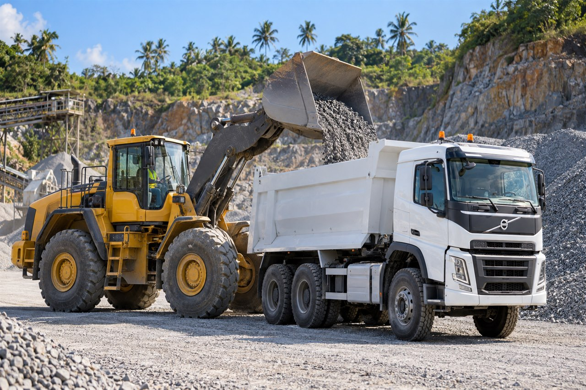
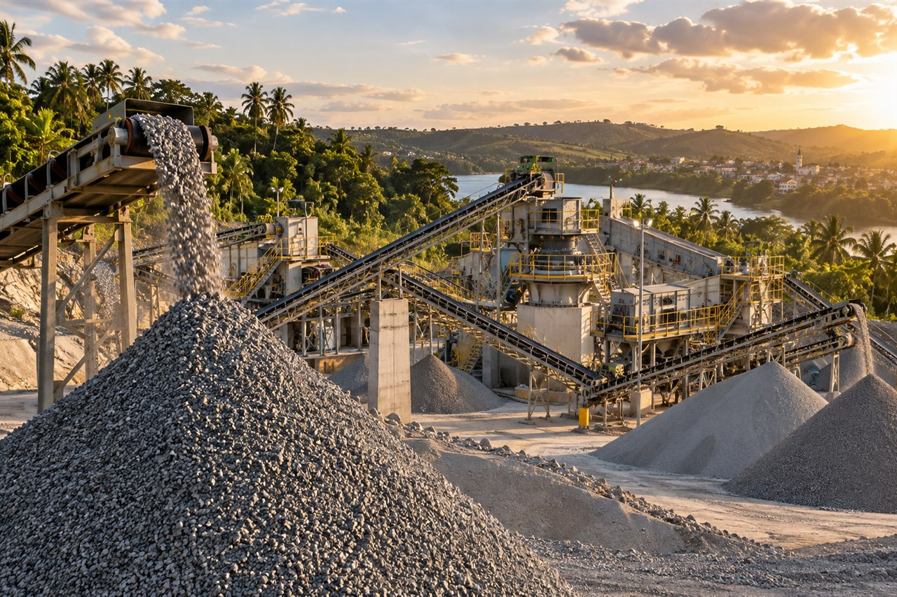
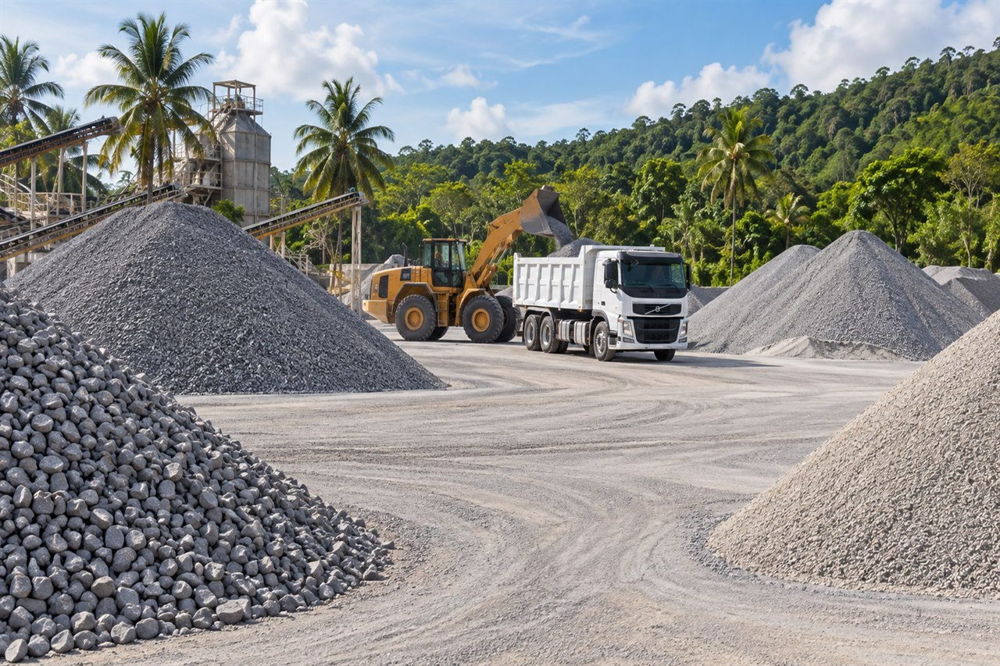
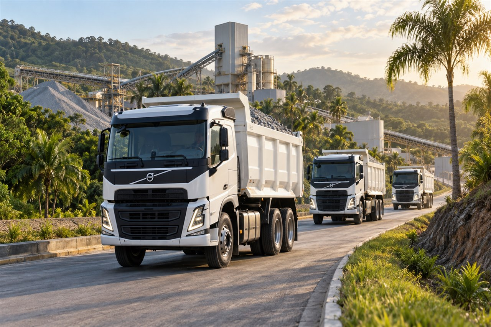
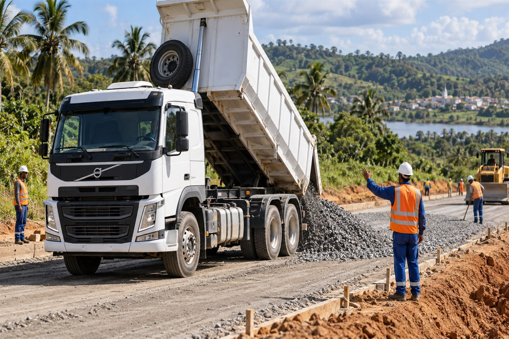

01
Origem
Nossa pedreira
Uma jazida em Nazaré-BA, posicionada para atender o Recôncavo e o Baixo Sul.



Nazaré, Bahia
Agregados que transformam grandes projetos em realidade.
Conheça a operação
Conheça o caminho que une jazida, tecnologia, controle e logística para entregar o agregado certo ao seu projeto.

Origem
Uma jazida em Nazaré-BA, posicionada para atender o Recôncavo e o Baixo Sul.

Matéria-prima
Rigor técnico desde o decapeamento, preservando a qualidade da rocha que inicia cada projeto.

Fluxo
Equipamentos e pessoas conectam cada frente da operação com ritmo, segurança e continuidade.

Transformação
Britadores e correias transformam a rocha em agregados de granulometria controlada.

Escolha
Uma linha completa para diferentes escalas, especificações e fases da construção civil.
Conhecer produtos
Movimento
Retirada na pedreira e atendimento comercial para planejar o caminho até a sua obra.

Destino
Do primeiro contato ao volume certo, a TopBritas aproxima produção e construção.
Solicitar orçamentoCatálogo de produtos
11 agregadosA qualidade da jazida, a capacidade de britagem e a organização dos estoques formam um catálogo preparado para diferentes bases, concretos, pavimentos, drenagens e grandes obras.
Granulometrias e disponibilidade variam conforme planejamento da produção. Consulte nossa equipe para confirmar o material ideal.
Conhecer catálogo e aplicaçõesOperação estratégica
Na BA-001, estamos conectados às principais rotas do Recôncavo e do Baixo Sul da Bahia.


Seu próximo projeto começa pela base